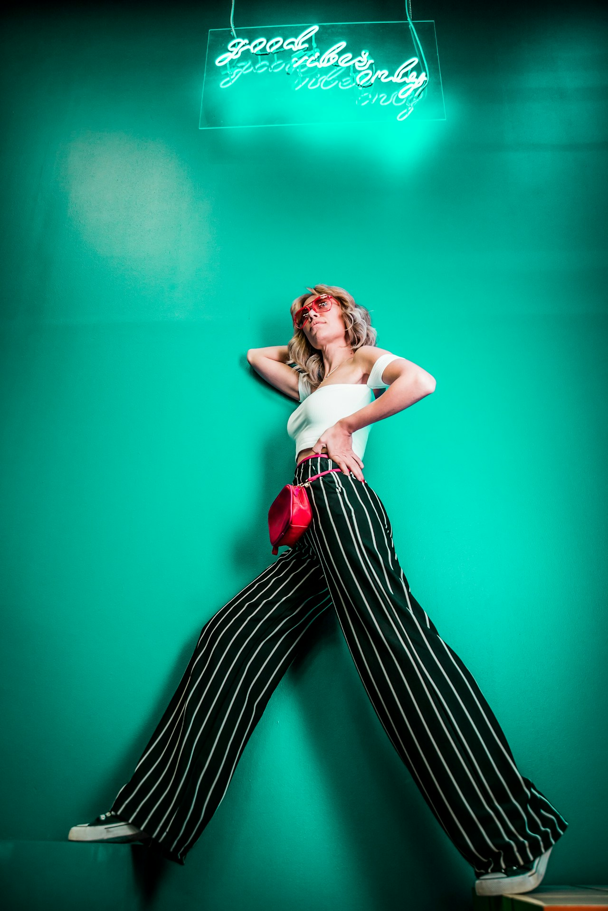

1. The Philosophical Shift from Abundance to Precision
The modern wardrobe crisis is not one of scarcity, but of chaotic excess. The average contemporary consumer possesses dozens of poorly constructed synthetic garments yet regularly experiences the daily paralysis of having "nothing to wear." This frustrating paradox arises because mass-produced apparel lacks modular cohesion, tactile integrity, and enduring structural tailoring.
A capsule wardrobe built entirely upon 100% natural fibers represents a conscious, liberating rejection of this cycle. By curating a compact rotation of 8 to 12 impeccably crafted garments, you create a dynamic sartorial ecosystem where every item effortlessly harmonizes with every other piece, providing dozens of elegant outfit variations with zero cognitive fatigue.
At Amber Garb Quest, we approach wardrobe design through the lens of architectural minimalism: every garment must justify its presence through material longevity, ergonomic comfort, and chromatic versatility.
2. The Environmental Imperative: Ending Microplastic Shedding
Every synthetic garment (polyester, nylon, acrylic, spandex) sheds up to 700,000 microscopic plastic filaments during a single domestic wash cycle. These non-biodegradable particles bypass municipal water treatment facilities, entering marine food webs and accumulating in human tissue. Furthermore, synthetic textiles trap body sweat and cultivate bacterial colonies, necessitating frequent chemical washing that accelerates fabric degradation.
Natural fibers—virgin wool, Belgian flax linen, mulberry silk, and Mongolian cashmere—are inherently biodegradable, renewable, and breathable. Wool and silk possess natural protein barriers that repel odor-causing bacteria, allowing garments to be refreshed simply by hanging them overnight in fresh air.
3. The Core Natural Fiber Matrix
Every sustainable capsule must be constructed from pure, unblended natural fibers. Below is the essential material taxonomy utilized across our atelier:
| Fiber Type | Optimal Seasonality | Tensile & Thermal Properties | Key Capsule Roles |
|---|---|---|---|
| Belgian Organic Flax Linen | Spring / Summer / Autumn | Hollow fiber core allows supreme airflow; gains softness with every wash | Relaxed tailoring, wide-leg trousers, camp-collar shirting |
| Virgin Merino & Cheviot Wool | All Seasons (Weight Dependent) | Natural crimp traps insulating air; naturally odor-resistant and water-repellent | Tailored blazers, full-canvas overcoats, pleated trousers |
| Mongolian Cashmere (4-Ply) | Autumn / Winter | Three times warmer than standard wool with microscopic loft | Turtlenecks, crewnecks, structured wrap cardigans |
| Raw Mulberry Silk | All Seasons | High protein fiber with subtle matte sheen and fluid anatomical drape | Layering blouses, midi skirts, pocket squares & scarves |
4. The 10-Piece Golden Earth Capsule Blueprint
To achieve maximum modularity, we recommend the following 10 cornerstone items in an interlocking amber and earth-tone palette:
- The Amber Wool Overcoat: Double-breasted or wrap silhouette in 550 GSM golden amber Melton wool. Provides dramatic lines and supreme weatherproofing.
- The Unstructured Ochre Linen Blazer: Lightweight, breathable, and versatile for both professional environments and relaxed weekend journeys.
- The Terracotta Pleated Trousers: High-waisted, tailored with side adjusters and double forward pleats in dense 340 GSM organic flax or cavalry twill.
- The Sandstone Linen-Silk Trousers: A light, neutral base piece for warm weather ease and layered winter contrast.
- The 4-Ply Honey Cashmere Turtleneck: Luxurious, featherlight insulation for sub-zero urban layering.
- The Unbleached Raw Silk Camp Shirt: Timeless collar construction with fluid drape and natural moisture-wicking properties.
- The Ribbed Merino Knit Crew: Mid-weight transitional knit in roasted umber for everyday resilience.
- The Silk-Flax A-Line Midi Skirt / Culottes: Versatile motion and architectural silhouette that pairs effortlessly with knits and tailored jackets.
- The Vegetable-Tanned Saddle Leather Belt: Handcrafted with solid brass hardware, offering a refined visual transition between torso and trouser.
- The Botanical Amber Silk Scarf: Multifunctional accent for thermal warmth, hair styling, and chromatic framing.
5. Mathematical Permutations of the 10-Piece Matrix
When each item is designed within a unified color spectrum and compatible silhouette proportions, the mathematical versatility is extraordinary:
- 4 Tops × 3 Bottoms = 12 Core Outfits: From casual linen shirting paired with terracotta trousers to cashmere turtlenecks styled over sandstone culottes.
- 12 Core Outfits × 2 Outerwear Options = 24 Layered Configurations: Adding either the unstructured ochre blazer or the heavyweight amber overcoat transforms the formality instantly.
- 24 Configurations × 2 Accessory Accents = 48 Distinct Ensembles: Incorporating the botanical silk scarf and leather belt adjustments provides distinct looks for nearly two months without repeating a single exact combination.
6. Step-by-Step Guide to Transitioning Your Wardrobe
- The Rigorous Wardrobe Audit: Remove all garments that contain more than 20% synthetic polymers or that have not been worn within the past 12 months.
- Identify Your Chromatic Anchor: Select your core neutral palette (such as sandstone, camel, and espresso) and your accent spectrum (such as golden amber and terracotta).
- Acquire One Exceptional Outerwear Piece First: A masterfully tailored wool coat instantly elevates everything worn beneath it.
- Add Layering Knitwear and Breathable Trousers: Focus on 100% cashmere, virgin wool, and Belgian flax.
- Practice Intentional Maintenance: Utilize cedar storage blocks, boar-bristle garment brushes, and vertical steam rather than harsh commercial chemical dry cleaners.
7. Cost-Per-Wear Economics: The True Value of Quality
While an artisanal natural fiber garment requires a higher upfront financial commitment than fast-fashion alternatives, its cost-per-wear over time is drastically lower. A poorly made synthetic coat costing $150 may lose its shape and pill within 25 wearings ($6.00 per wear). In contrast, a bespoke $900 amber wool coat worn 150 times per year across two decades costs under $0.30 per wear, while delivering incomparably superior comfort, elegance, and tactile pride.
8. Frequently Asked Questions on Capsule Wardrobes
9. Conclusion: The Freedom of Sartorial Clarity
A natural fiber capsule wardrobe is not a restrictive limitation; it is an empowering liberation. By choosing craftsmanship over consumerism and pure earth fibers over synthetic imitations, you cultivate an authentic personal style that stands outside the frantic cycle of disposable fashion.
10. Curating Natural Fiber Accessories & Finishing Accents
A capsule wardrobe is only as functional as its unifying accents. When selecting accessories to complement your natural fiber essentials, prioritize organic textures that share the same tactile authenticity as your apparel:
- Hand-Woven Silk Twill Scarves: An unlined, hand-rolled silk twill scarf in warm saffron or burnt terracotta provides immediate thermal insulation when tied in an ascot knot, while introducing subtle pattern without disrupting minimalist aesthetics.
- Oak-Bark Tanned Leather Belts: Handcrafted from full-grain bridle leather tanned over 12 months using sustainable oak bark liquors in historic British tanneries. These belts feature solid forged brass buckles that develop an authentic golden patina alongside your amber trousers.
- Unbleached Raw Linen Pocket Squares: Folded in a crisp presidential TV fold or relaxed puff, an unbleached flax pocket square softens the structure of tailored linen blazers.
11. The Environmental Life-Cycle Assessment of Natural Flax vs Synthetics
Independent textile life-cycle studies consistently demonstrate that organic flax linen requires 80% less irrigation water than conventional cotton and zero petroleum inputs compared to polyester. Flax cultivation enriches soil biodiversity, acts as a carbon sink during its growth cycle, and leaves behind zero toxic microplastic residues. Choosing linen for your capsule wardrobe is an active vote for agricultural regeneration.